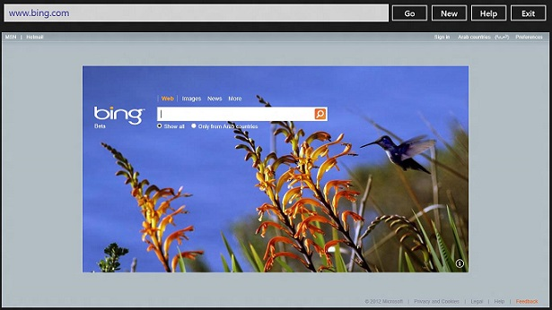

Do you need to build your own web browser using Metro Style Application ?
Then you should start here. This is a simple open project that shows you how much easy it is to build your customized browser. The main feature of this app is to use a XAML control in the ToolBox called "WebView". It provides a wide range of methods needed to develop a web browser. It's for you then to discover them.
Following this link, you will find this application built using WPF application under the Framework .NET4.0: http://code.msdn.microsoft.com/Building-a-web-browser-in-C-8f992c88
This application requires Windows 8 Consumer Preview and Visual Studio 2012 Release Condidate.
You can download them from http://www.microsoft.com/visualstudio/11/en-us, and http://windows.microsoft.com/en-US/windows-8/download.
Then, just open the solution, and click F5 to run it immediately.
Description
This is a screenshot for the application, simple and light.

Here is a link to a simple video that describes the functionality of this program.
https://www.facebook.com/video/video.php?v=2961989147991&saved
namespace Metro_Style_Web_Browser
{
/// <summary>
/// An empty page that can be used on its own or navigated to within a Frame.
/// </summary>
public sealed partial class MainPage : Page
{
double buttonWidth = 93d;
double margin = 5d;
public MainPage()
{
this.InitializeComponent();
}
/// <summary>
/// Invoked when this page is about to be displayed in a Frame.
/// </summary>
/// <param name="e">Event data that describes how this page was reached. The Parameter
/// property is typically used to configure the page.</param>
protected override void OnNavigatedTo(NavigationEventArgs e)
{
}
private void pointerMovedEvent(object sender, PointerRoutedEventArgs e)
{
Button b = (Button)sender;
if (b.Width == buttonWidth)
{
b.Margin = new Thickness(b.Margin.Left - margin, b.Margin.Top - margin / 2, b.Margin.Right, b.Margin.Bottom);
b.Height += margin;
b.Width += 2 * margin;
b.FontSize += margin;
}
}
private void pointerExitedEvent(object sender, PointerRoutedEventArgs e)
{
Button b = (Button)sender;
if (b.Width == buttonWidth + 2 * margin)
{
b.Margin = new Thickness(b.Margin.Left + margin, b.Margin.Top + margin / 2, b.Margin.Right, b.Margin.Bottom);
b.Height -= margin;
b.Width -= 2 * margin;
b.FontSize -= margin;
}
}
private void newB_Click(object sender, RoutedEventArgs e)
{
tb.Text = "";
}
private void goB_Click(object sender, RoutedEventArgs e)
{
Uri uri = new Uri("http://" + tb.Text);
try
{
wv1.Navigate(uri);
}
catch (Exception ex)
{
tb.Text = "invalid adress !";
}
}
private void exitB_Click(object sender, RoutedEventArgs e)
{
Application.Current.Exit();
}
private void helpB_Click(object sender, RoutedEventArgs e)
{
tb.Text = "http://code.msdn.microsoft.com/site/search?f%5B0%5D.Type=User&f%5B0%5D.Value=Houssem%20Dellai";
wv1.Navigate(new Uri("http://code.msdn.microsoft.com/site/search?f%5B0%5D.Type=User&f%5B0%5D.Value=Houssem%20Dellai"));
}
}
}
namespace Metro_Style_Web_Browser { /// <summary> /// An empty page that can be used on its own or navigated to within a Frame. /// </summary> public sealed partial class MainPage : Page { double buttonWidth = 93d; double margin = 5d; public MainPage() { this.InitializeComponent(); } /// <summary> /// Invoked when this page is about to be displayed in a Frame. /// </summary> /// <param name="e">Event data that describes how this page was reached. The Parameter /// property is typically used to configure the page.</param> protected override void OnNavigatedTo(NavigationEventArgs e) { } private void pointerMovedEvent(object sender, PointerRoutedEventArgs e) { Button b = (Button)sender; if (b.Width == buttonWidth) { b.Margin = new Thickness(b.Margin.Left - margin, b.Margin.Top - margin / 2, b.Margin.Right, b.Margin.Bottom); b.Height += margin; b.Width += 2 * margin; b.FontSize += margin; } } private void pointerExitedEvent(object sender, PointerRoutedEventArgs e) { Button b = (Button)sender; if (b.Width == buttonWidth + 2 * margin) { b.Margin = new Thickness(b.Margin.Left + margin, b.Margin.Top + margin / 2, b.Margin.Right, b.Margin.Bottom); b.Height -= margin; b.Width -= 2 * margin; b.FontSize -= margin; } } private void newB_Click(object sender, RoutedEventArgs e) { tb.Text = ""; } private void goB_Click(object sender, RoutedEventArgs e) { Uri uri = new Uri("http://" + tb.Text); try { wv1.Navigate(uri); } catch (Exception ex) { tb.Text = "invalid adress !"; } } private void exitB_Click(object sender, RoutedEventArgs e) { Application.Current.Exit(); } private void helpB_Click(object sender, RoutedEventArgs e) { tb.Text = "http://code.msdn.microsoft.com/site/search?f%5B0%5D.Type=User&f%5B0%5D.Value=Houssem%20Dellai"; wv1.Navigate(new Uri("http://code.msdn.microsoft.com/site/search?f%5B0%5D.Type=User&f%5B0%5D.Value=Houssem%20Dellai")); } } }
See my Metro Style Web Browser v2.
For more details, you can contact me on: houssem.dellai@ieee.org or through the Q&A area in this page.